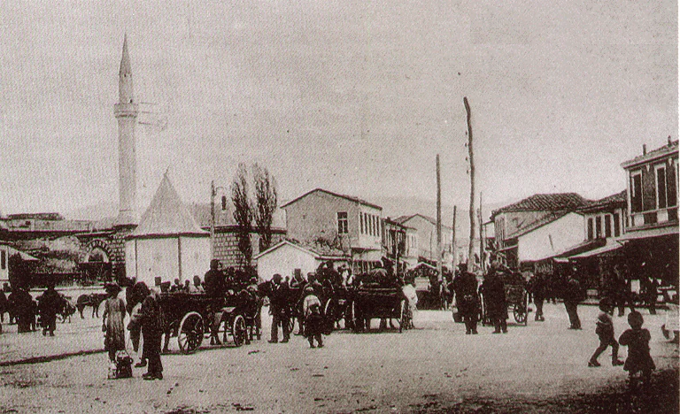
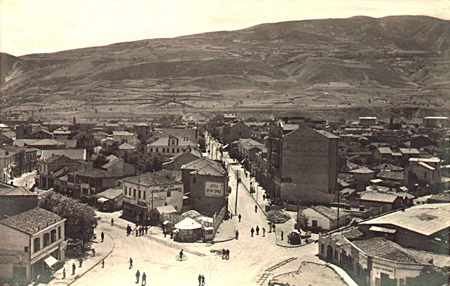
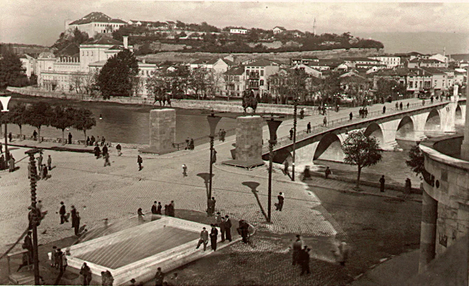
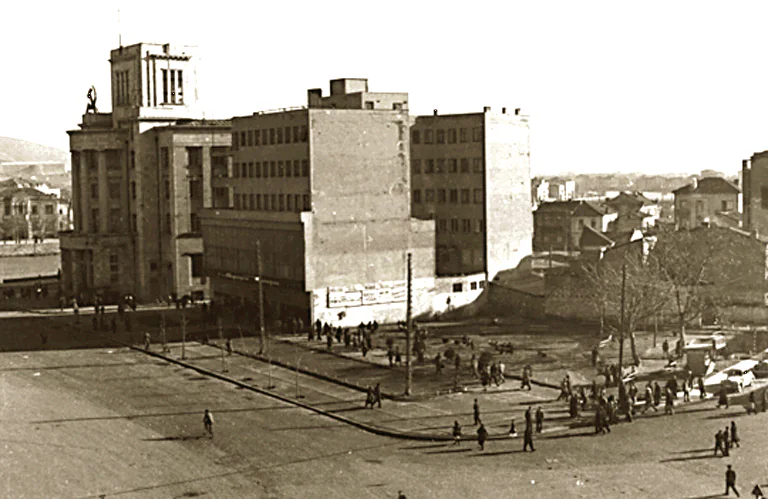
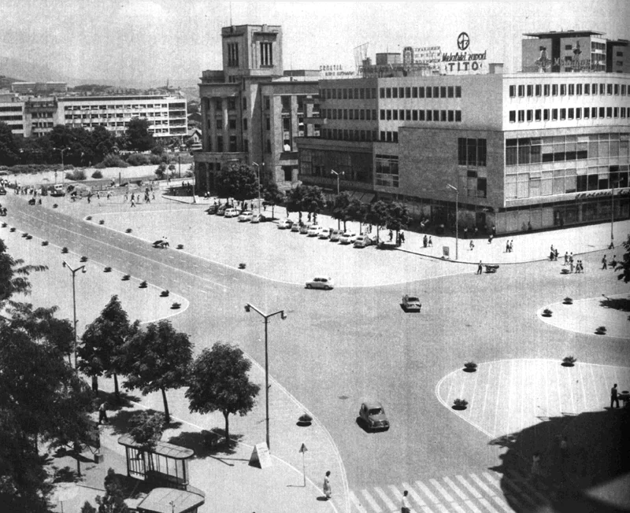

Feier - Platz
- Drehbuch
- Aco Petrovski und Aki Pavlovski
- Regie
- Trajče Popov
- Kameramann
- Kiro Bilbilovski und Trajče Popov
- Jahr
- 1949
- Dauer
- 00:19

Der Stadtplatz von Skopje, fotografiert um die Mitte des 19. Jahrhunderts.

Skopje Ende des 19. Jahrhunderts. Der Platz mit der Burmali-Moschee und einigen Gebäuden um sie herum. Eine noch ungestaltete Straße. Sammelplatz der Warenfuhrleute mit Ochsengespannen.

Der Platz Ende des 19., Anfang des 20. Jahrhunderts. Im Vordergrund ein Stand für Kutschen und Fuhrwerke. Rechts erstrecken sich in zwei Reihen die Gebäude direkt vor der Steinbrücke. Dahinter die Burmali-Moschee. Links davon Wohnhäuser, gleich dahinter ist ein Teil der Bank zu sehen. Im Hintergrund erhebt sich die Festung von Skopje - Kale mit der Kaserne.

Der Platz Ende des 19., Anfang des 20. Jahrhunderts. Im Vordergrund ein Stand für Kutschen und Fuhrwerke. Rechts erstrecken sich in zwei Reihen die Gebäude direkt vor der Steinbrücke, in denen Händler- und Handwerkerläden untergebracht waren. Links davon die Burmali-Moschee, daneben Wohnhäuser. Im Hintergrund erhebt sich die Festung von Skopje - Kale mit der Kaserne.

Skopje während der Balkankriege. Die Burmali-Moschee mit einem Kutschenstand. Rechts davon die beidseitig bebauten Gebäude vor dem Eingang der Steinbrücke, in denen Läden und Handwerker untergebracht waren. Im Vordergrund Schuhputzer und Soldaten. Die Straße ist mit offenen Rinnen für Regenwasser angelegt.

Ein Teil des Platzes vor der Steinbrücke (während des Balkankrieges). Zu erkennen sind ungepflasterte Straßen. Das Gebäude links gehört zu den zweireihig vor der Steinbrücke errichteten Bauten. Darin befanden sich Händler- und Handwerkerläden. Um 1920 wurden sie abgerissen.

Skopje, um 1920. Ein Teil des Stadtplatzes vor der Steinbrücke. Die ersten Kioske für Dienstleistungen und Verkauf. Die Kioske haben eine betonte Architektur im Detail, d. h. in der Gestaltung der Dächer. Die Brücke ist durch Fußgängerkonsolen verbreitert.

Skopje, um 1920. Ein gestalteter Stadtplatz mit städtischen Elementen, einem ummauerten Grünplatz, gepflasterten Flächen und Gehwegen mit Bordsteinen. Ein betonter Zugang zur Steinbrücke mit freiem Blick auf den Fluss und die Stadtfestung. Reges Treiben von Bürgern und Pferdekutschen als öffentlichen Verkehrsmitteln.

Skopje, um 1920. Ein gestalteter Stadtplatz mit städtischen Elementen, einem ummauerten Grünplatz, gepflasterten Flächen und Gehwegen mit Bordsteinen. Ein betonter Zugang zur Steinbrücke mit freiem Blick auf den Fluss und die Stadtfestung. Reges Treiben von Bürgern und Pferdekutschen als öffentlichen Verkehrsmitteln.

Skopje nach dem Ersten Weltkrieg, zu Beginn der Neugestaltung des Stadtplatzes. Die Gebäude hinter der Burmali-Moschee, vor der Steinbrücke, sind abgerissen. Die Brücke hat ein neues Geländer an den Fußgängerkonsolen. Im Hintergrund ein Teil des Viertels Pajko am linken Ufer des Vardar.

Skopje unmittelbar nach dem Ersten Weltkrieg. Der Stadtplatz vor dem Bau des Ristić-Palastes. Blick auf eine aufgelockerte Bebauung in traditioneller Architektur. Geradeaus nach oben die Hauptstraße zum damaligen Bahnhof. Links halb oben die heutige Straße „11. Oktober“.

Skopje, 1920er Jahre. Der Stadtplatz von Süden mit einem Teil des Ristić-Palastes rechts. Links das Hotel „Sarajevo“, das Hotel „Obedinuvanje“ und das Café „Marger“. Zahlreiche neue Gebäude und Läden entstehen an der Hauptstraße.

Der Platz, 1920er Jahre. Im Vordergrund der Kutschenstand (vor dem Offiziersheim), im Hintergrund dominiert das Haus des Apothekers Ristić, im Volksmund Ristić-Palast genannt.

Skopje um 1930. Der Stadtplatz von Süden mit dem Ristić-Palast und dem Holzlager im Vordergrund. Zahlreiche neue Gebäude und Läden entstehen an der Hauptstraße.

Skopje, um 1930. Ein Teil des Stadtplatzes mit dem Ristić-Palast. Rechts der Zaun des Holzlagers, wo Baumaterial verkauft wurde.

Luftaufnahme des Makedonija-Platzes. (1920er Jahre)

Ein Teil des Platzes mit dem Ristić-Palast (1930er Jahre)

Ein Teil des Platzes und der Ristić-Palast. Links unten eine überdachte Bühne für das Militärorchester, das an Sonn- und Feiertagen spielte. Rechts in der Ferne die Mühle „Balkan“. (1930er Jahre)

Skopje um 1930. Der Stadtplatz mit dem Ristić-Palast und dem Holzlager im Vordergrund. Zahlreiche neue Gebäude und Läden entstehen an der Hauptstraße.

Skopje um 1930. Der Stadtplatz von Süden nach dem Bau des Ristić-Palastes, mit dem Holzlager im Vordergrund. Zahlreiche neue Gebäude und Läden entstehen an der Hauptstraße.

Skopje um 1930. Ein Teil des Platzes von Süden, nach dem Bau des Ristić-Palastes, mit dem Holzlager im Vordergrund und der Hauptstraße zum Bahnhof mit zahlreichen Gebäuden und Läden.

Ein Teil des Platzes, mit dem Offiziersheim im Hintergrund
- 1920er Jahre.

Der Platz um 1927. Der südliche Zugang zur Steinbrücke. Hinten links sind das Nationaltheater und die Festung von Skopje - Kale zu sehen.

Der Platz um 1927. Der südliche Zugang zur Steinbrücke. Im Vordergrund die Kinoterrasse, auf der im Sommer Filme gezeigt wurden.

Skopje, um 1925. Ein Teil des Stadtplatzes vor der Steinbrücke. Die ersten Kioske für Dienstleistungen und Verkauf. Die Kioske haben eine betonte Architektur im Detail, d. h. in der Gestaltung der Dächer. Die Brücke ist durch Fußgängerkonsolen verbreitert. Im Hintergrund links das Nationaltheater und die Festung von Skopje - Kale. Im Vordergrund wird die Kinoterrasse abgerissen, an deren Stelle die Nationalbank entstand.

Der Platz um 1926. Ein gestalteter Stadtplatz mit städtischen Elementen, einem ummauerten Grünplatz, gepflasterten Flächen und Gehwegen mit Bordsteinen. Am Grünplatz befand sich ein Kutschenstand, gleich daneben ein Parkplatz für Kraftfahrzeuge und Taxis. Rechts Restaurants und Hotels. Geradeaus die Steinbrücke mit einem Teil des jüdischen Viertels und des Viertels Pajko. Links im Bild das im Bau befindliche Offiziersheim.

Der Platz, zweite Hälfte der 1920er Jahre. Ein gestalteter Stadtplatz mit städtischen Elementen, einem ummauerten Grünplatz, gepflasterten Flächen und Gehwegen mit Bordsteinen. Am Grünplatz befand sich ein Kutschenstand. Rechts Restaurants und Hotels. Links das noch im Bau befindliche Offiziersheim. Im Hintergrund die Steinbrücke mit einem Teil des jüdischen Viertels und des Viertels Pajko.

Der Stadtplatz von Skopje - 1920er Jahre. Vor dem Offiziersheim befand sich ein Taxistand für Kraftfahrzeuge. Doch auch Pferdekutschen gibt es noch als Verkehrsmittel der Bürger.

Der ganze Platz - Ende der 1920er Jahre. Vor dem Offiziersheim befand sich ein Taxistand für Kraftfahrzeuge. Doch auch Pferdekutschen gibt es noch als öffentliches Verkehrsmittel der Bürger.

Der Platz mit dem Hotel „Sarajevo“ und dem beliebten Café „Marger“, einem Lieblingsort der Bürger von Skopje. Links vom Hotel „Sarajevo“ stand das Hotel „Obedinuvanje“. Im Vordergrund sitzt ein Brezelverkäufer auf dem Gehweg. (um 1935)

Der Platz mit dem Hotel „Sarajevo“ und dem beliebten Café „Marger“, das ein Lieblingsort der Bürger von Skopje war. Links vom Hotel „Sarajevo“ stand das Hotel „Obedinuvanje“. Links ist der südliche Zugang zur Steinbrücke zu sehen - 1920er Jahre.

Der Platz mit der Nationalbank, der im Bau befindlichen Wirtschafts- und Handelskammer und einem Teil des Viertels Pajko mit der Osmanischen Bank. Vor der Handelskammer die Hotels und das Café „Marger“ (vor ihrem Abriss). (1930er Jahre)

Ein Teil des Platzes mit den Denkmälern am Südeingang der Steinbrücke. - 1930er Jahre

Ein Teil des Platzes zur Steinbrücke hin. Am Eingang der Brücke stehen auf zwei hohen Marmorsockeln zwei Reiterstandbilder (vom Bildhauer Antun Augustinčić). Auf dem Platz wurde auch ein Brunnen gebaut. Links das Nationaltheater, die Festung von Skopje - Kale und ein Teil des jüdischen Viertels. (um 1930)

Ein Teil des Platzes mit der Nationalbank und der Wirtschafts- und Handelskammer. (1930er Jahre)

Der Stadtplatz von Skopje, 1950er Jahre, mit der alten Post im Hintergrund und links dem Naturkundemuseum.

Der Platz, 1950er Jahre. Das erste Gebäude links ist das unter dem Namen „Macura“ bekannte Haus. Darin befanden sich die Zentralapotheke und andere Geschäfte. Im Hintergrund das Offiziersheim, die Nationalbank und die Steinbrücke. Im Vordergrund, anstelle des früheren Holzlagers, ein schön angelegter Park.

Der Stadtplatz von Skopje, 1950er Jahre, mit dem Hotel „Makedonija“ auf der linken Seite.

Der Platz in den 1950er Jahren.

Der Platz in den 1950er Jahren.

Ein Teil des Platzes mit dem Offiziersheim, im Hintergrund das Nationaltheater und die Festung von Skopje - Kale. (1950er Jahre)

Ein Teil des Platzes zur Steinbrücke hin. Links das Offiziersheim, rechts die Nationalbank und die Wirtschafts- und Handelskammer. Städtischer Busverkehr (Eindecker und Doppeldecker) mit Anfangs- und Endhaltestelle am Platz. (1950er Jahre)

Der Stadtplatz von Skopje um 1950. Links das Offiziersheim, rechts die Nationalbank mit der Wirtschafts- und Handelskammer. Dazwischen die Steinbrücke, auf der anderen Seite die Gebäude der Banken und Ibni Pajko.

Der Platz - 1950er Jahre

Der Platz, 1970er Jahre. Blick zur Steinbrücke, zum Gebäude „Ibni Pajko“ und zum Bankenkomplex. Der Platz diente in jenen Jahren als Parkplatz.

Ein Teil des Platzes, 1970er Jahre, mit dem Ristić-Palast und den Gebäuden an der Straße „Goce Delčev“.

 Aquädukt4 Postkarten
Aquädukt4 Postkarten Kale30 Postkarten
Kale30 Postkarten Brücken60 Postkarten
Brücken60 Postkarten Kai58 Postkarten
Kai58 Postkarten Platz46 Postkarten
Platz46 Postkarten Bauten66 Postkarten
Bauten66 Postkarten Christliche Gotteshäuser19 Postkarten
Christliche Gotteshäuser19 Postkarten Muslimische Bauten33 Postkarten
Muslimische Bauten33 Postkarten Offiziersheim29 Postkarten
Offiziersheim29 Postkarten Theater28 Postkarten
Theater28 Postkarten Bahnhof13 Postkarten
Bahnhof13 Postkarten Schulen36 Postkarten
Schulen36 Postkarten Parks12 Postkarten
Parks12 Postkarten Märkte18 Postkarten
Märkte18 Postkarten Straßen38 Postkarten
Straßen38 Postkarten Panorama I60 Postkarten
Panorama I60 Postkarten Panorama II30 Postkarten
Panorama II30 Postkarten Collagen55 Postkarten
Collagen55 Postkarten Hochwasser9 Postkarten
Hochwasser9 Postkarten Erdbeben27 Postkarten
Erdbeben27 Postkarten Skopje 200026 Postkarten
Skopje 200026 Postkarten